MANUAL DO USUÁRIO
WebRural: livro caixa do produtor rural
Como entrar, cadastrar, lançar, fechar o exercício, emitir relatórios e gerar os arquivos fiscais. As telas deste manual usam dados fictícios.
O WebRural é a nova versão do sistema Rural, agora usada pelo navegador (Chrome, Edge ou Firefox), sem instalar nada no computador. Ele faz o mesmo que o sistema anterior: controla o livro caixa de cada propriedade, divide cada lançamento entre os proprietários conforme a participação de cada um, acompanha o rebanho e gera relatórios, a apuração do resultado e o arquivo do LCDPR.
Use o índice ao lado para ir direto ao assunto. Clique em qualquer imagem para vê-la no tamanho real.
Vídeos de demonstração
Cinco vídeos curtos mostram o sistema em uso, com legendas explicando cada passo. Clique no vídeo para assistir; o botão no canto do vídeo coloca em tela cheia. Os vídeos não têm som.
1.Acesso ao sistema
Abra o navegador e entre no endereço do WebRural informado pelo administrador. A tela de entrada pede o login e a senha.

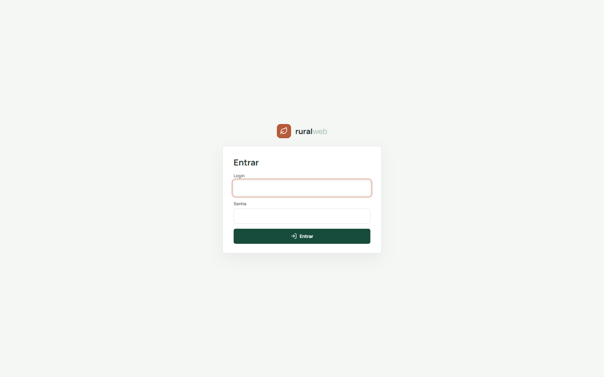
Primeiro acesso
- Digite o login recebido do administrador e deixe a senha em branco (ou use a senha provisória que ele passou).
- O sistema pede que você crie a sua senha: digite a nova senha duas vezes e clique em Salvar e entrar.
- A senha precisa ter no mínimo 8 caracteres, com letras e números, e não pode ser igual ao login.
Trocar a senha
A qualquer momento, clique no ícone da chave 🔑, no canto superior direito, ao lado do seu nome. Informe a senha atual, a nova senha e a confirmação. A senha também vence depois de alguns dias (prazo definido no cadastro da empresa); quando vencer, o sistema pede a troca ao entrar.

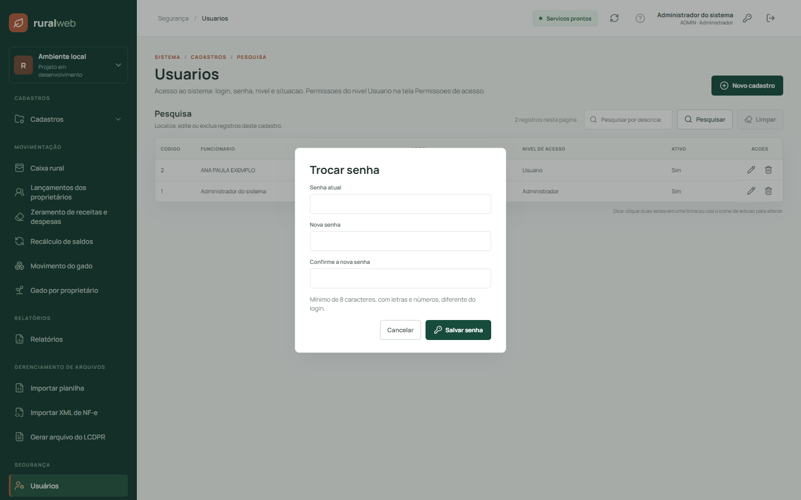
Sair e inatividade
Para sair, clique no ícone de saída, o último do canto superior direito. Se o sistema ficar parado por um tempo (definido no cadastro da empresa), aparece o aviso “Sessão prestes a expirar”; basta mexer o mouse ou apertar uma tecla para continuar. Se nada for feito, a sessão é encerrada e é preciso entrar de novo. O que já foi salvo não se perde.
2.Conhecendo a tela
▶ Ver o vídeo desta parteDepois de entrar, o sistema abre no Caixa rural. A tela tem três partes:

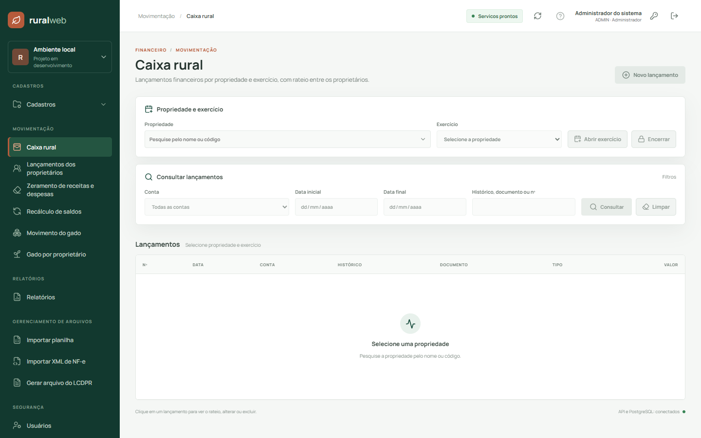
- Menu lateral (verde): organizado em Cadastros, Movimentação, Relatórios, Gerenciamento de arquivos e Segurança. Clique em Cadastros para abrir a lista de cadastros. Cada usuário vê só as opções que tem permissão de usar.
- Barra superior: mostra onde você está (por exemplo, Movimentação / Caixa rural), o indicador Serviços prontos (verde quando o sistema está funcionando), o botão de verificar a conexão de novo, o seu nome e nível, a troca de senha e a saída.
- Área de trabalho: o conteúdo da opção escolhida.

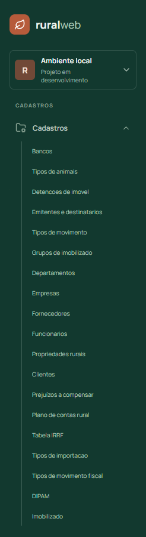
3.Como as telas funcionam
As telas seguem sempre o mesmo jeito de trabalhar. Aprendendo uma, você sabe usar as outras.
Pesquisar
- Digite no campo de pesquisa e aperte Enter ou clique em Pesquisar / Consultar.
- Apagou o que tinha pesquisado? A pesquisa é refeita sozinha com o que ficou nos outros campos, sem precisar clicar em Consultar.
- O botão Limpar esvazia todos os filtros e mostra tudo de novo.

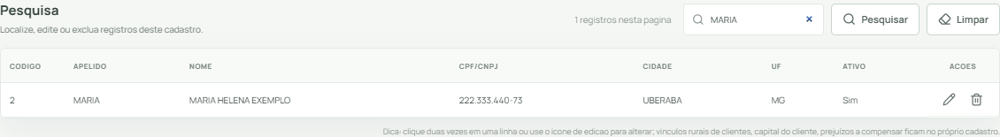
Campos de pesquisa com lista
Campos como Propriedade, Proprietário, Conta ou Fornecedor mostram “Digite para pesquisar”. Digite parte do nome ou o código e escolha na lista que aparece. O × no fim do campo limpa a escolha.
Incluir, alterar e excluir
- Novo cadastro / Novo lançamento abre uma janela em branco.
- Para alterar, clique duas vezes na linha ou no lápis ✏️ da coluna Ações. Para excluir, use a lixeira 🗑️ (o sistema pede confirmação).
- As janelas têm o cabeçalho verde com o que está sendo feito (Incluir ou Alterar) e de qual registro. Feche com o × ou com a tecla Esc.
- Campos com * são obrigatórios.
Letras maiúsculas
Nomes, históricos, documentos e demais textos são gravados em letras maiúsculas automaticamente, como no sistema anterior. E-mail, site e senha ficam como foram digitados.
Botões apagados
Um botão mais claro, que não responde ao clique, está desabilitado: falta escolher algo antes (por exemplo, a propriedade) ou o seu usuário não tem permissão para aquela ação. Passe o mouse sobre ele para ver o motivo, quando houver.
4.Cadastros
▶ Ver o vídeo desta parteAbra Cadastros no menu e escolha o cadastro. Todos têm a mesma tela: a pesquisa no topo, a lista com as informações mais importantes e os botões de alterar e excluir em cada linha.

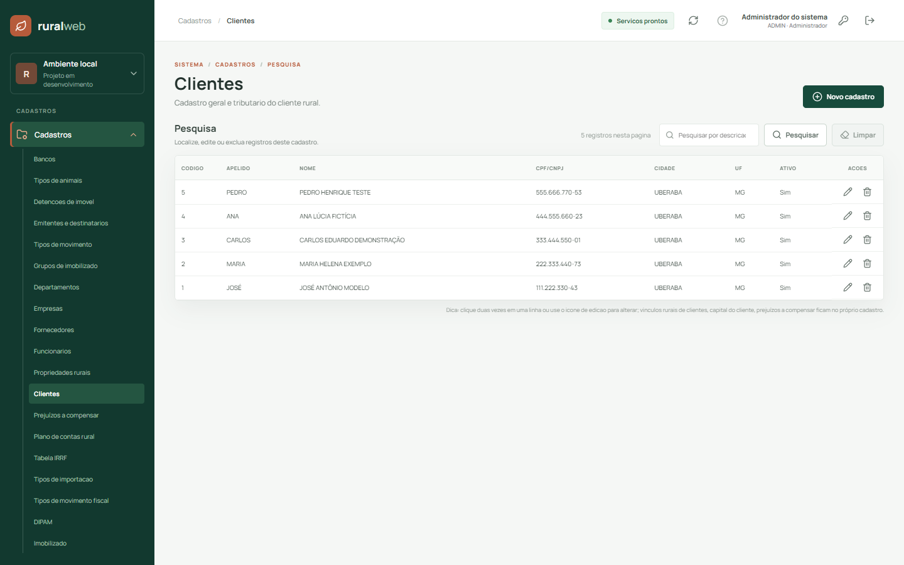

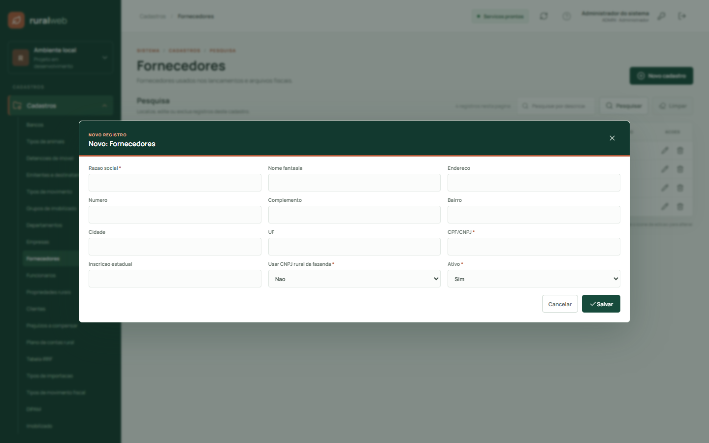
Clientes
O cadastro do cliente (produtor rural) reúne, na mesma janela, tudo o que é dele, separado em abas:
| Aba | O que tem |
|---|---|
| Dados | Cadastro geral e tributário: nome, apelido, tipo de pessoa, endereço, contatos, CPF/CNPJ, RG, início da atividade, capital social, dependentes, conferência e funcionário responsável. |
| Vínculos rurais | Em quais propriedades o cliente participa, com o percentual de participação, a inscrição de produtor, o tipo de detenção (proprietário, parceiro, arrendatário…) e a validade. |
| Capital do cliente | Histórico do capital social; o valor mais recente atualiza o campo Capital social do cadastro. |
| Prejuízos a compensar | Apenas consulta. Os ajustes são feitos em Cadastros › Prejuízos a compensar. |

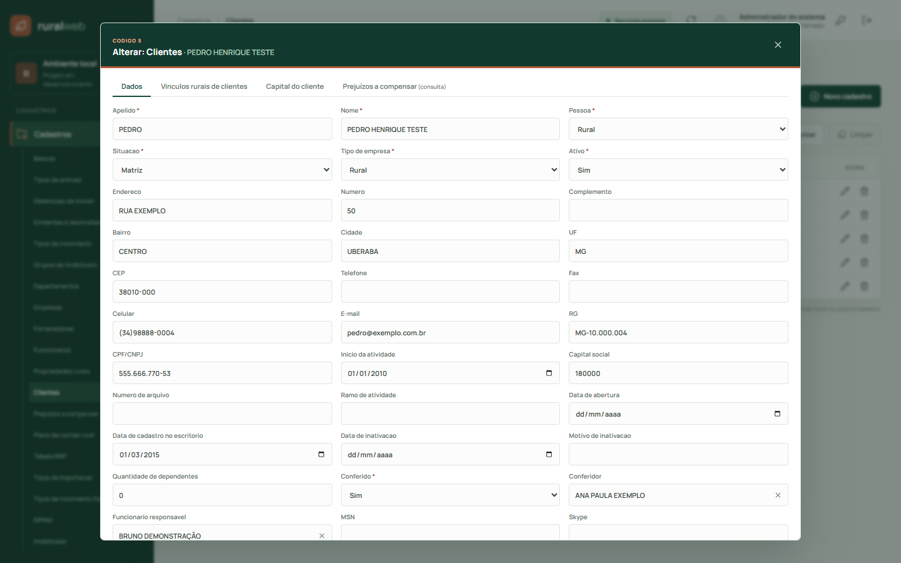

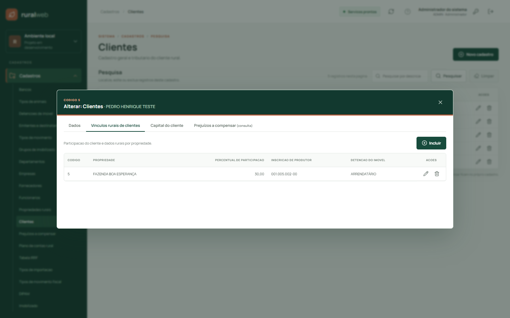
Propriedades rurais
Identificação da fazenda ou sítio: nome, área (ha), localização, INCRA, ITR, cidade/UF e se é propriedade de destino (usada nas transferências de gado). Os proprietários de cada propriedade são informados no cadastro do cliente, aba Vínculos.

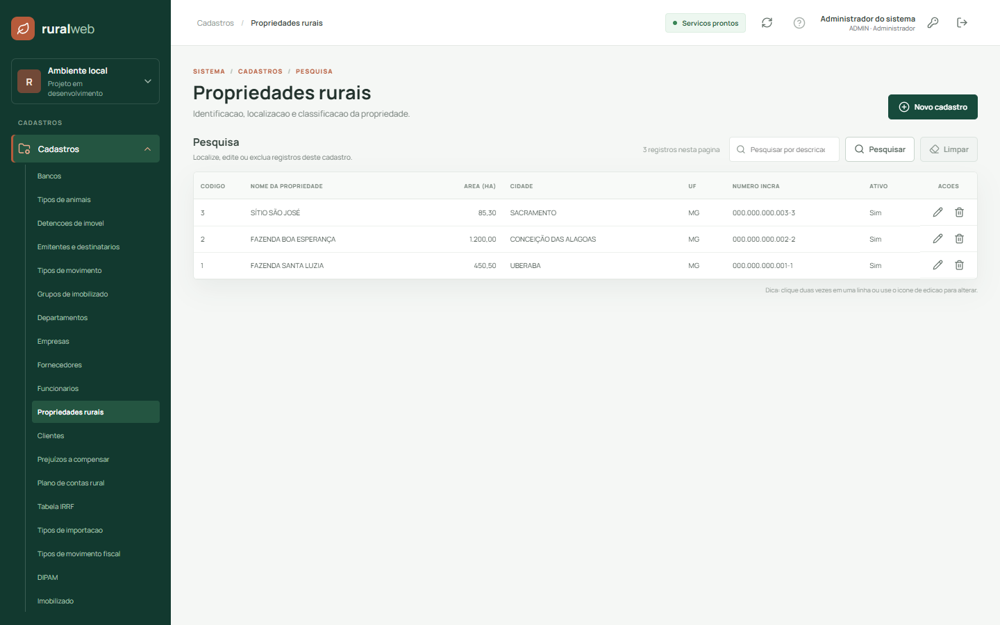
Plano de contas rural
As contas usadas nos lançamentos. Elas são organizadas em níveis pelo código (por exemplo, 4 Despesas › 4.01 Despesas de custeio › 4.01.06 Combustíveis).
- Sintética: conta de agrupamento (soma as de baixo). Não recebe lançamento.
- Analítica: conta que recebe lançamentos. Informe a conta sintética à qual ela pertence.
- Tipo: Ativo, Receita ou Despesa. Os valores são digitados sempre positivos; o tipo da conta define se soma ou subtrai.
- Adiantamento / Pagamento: para financiamentos e adiantamentos. A conta de pagamento indica a conta de adiantamento correspondente; o relatório Posição dos financiamentos usa essa ligação.
- Despesa não dedutível, receita não operacional, conta de bens e aparece no livro caixa ajustam como a conta entra na apuração e nos relatórios.
- A aba Vínculos de importação liga a conta ao código ou descrição usados nas planilhas importadas.

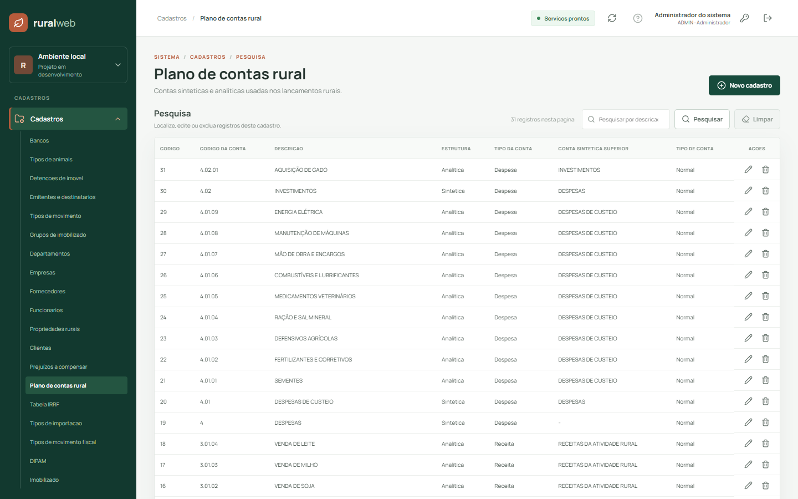

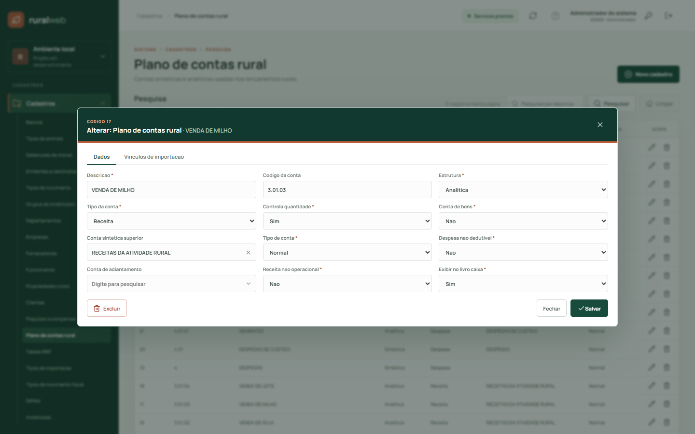
Empresa
Os dados do escritório, que saem no cabeçalho dos relatórios e no arquivo do LCDPR: razão social, CNPJ, endereço e os dados do contador (nome, CPF, CRC, e-mail e telefone). Aqui também ficam duas regras de segurança: o tempo de inatividade (em segundos) antes de encerrar a sessão e a validade da senha (em dias).

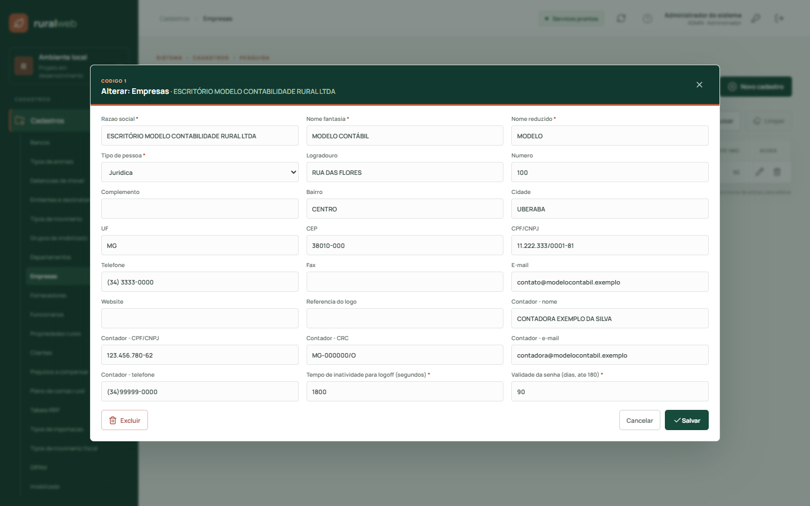
Os demais cadastros
| Cadastro | Para que serve |
|---|---|
| Bancos | Contas bancárias usadas nos lançamentos: número do banco, agência, conta, forma de pagamento (espécie ou outros) e tipo da conta (própria ou trânsito). |
| Tipos de animais | Categorias do rebanho (bois, vacas, novilhas…) com a espécie (bovino, suíno, equino…). |
| Detenções de imóvel | Forma de posse da propriedade (proprietário, parceiro, arrendatário, condômino) e o código usado no LCDPR. |
| Emitentes e destinatários | Quem emite ou recebe as notas do gado (cooperativas, leilões, frigoríficos). |
| Tipos de movimento | Classificação do movimento do gado (compra, venda, nascimento, transferência…). |
| Grupos de imobilizado | Grupos dos bens (máquinas, veículos, benfeitorias). |
| Departamentos | Departamentos do escritório, usados no cadastro de funcionários. |
| Fornecedores | Fornecedores informados nos lançamentos e no LCDPR, com CPF/CNPJ. |
| Funcionários | Pessoas do escritório. Todo usuário do sistema é ligado a um funcionário. |
| Prejuízos a compensar | Ajuste do prejuízo a compensar de um cliente em um ano. Sem ajuste, a apuração calcula pelos anos anteriores. |
| Tabela IRRF | Faixas do imposto de renda (valor inicial e final, alíquota, dedução e dedução por dependente), por mês e ano. Usada na apuração de resultados. |
| Tipos de importação | Layouts de planilha ou arquivo texto; na aba Colunas, qual coluna da planilha corresponde a cada campo do lançamento. |
| Tipos de movimento fiscal | Tipos de documento fiscal informados nos lançamentos. |
| DIPAM | Códigos DIPAM usados nas saídas de gado e no relatório de DIPAM. |
| Imobilizado | Bens por propriedade e exercício: grupo, descrição, data e valor de aquisição, venda e o lançamento do caixa correspondente. |
5.Caixa rural
▶ Ver o vídeo desta parteMovimentação › Caixa rural. Aqui são feitos os lançamentos de receitas, despesas e movimentos patrimoniais de cada propriedade. Cada lançamento é dividido automaticamente entre os proprietários, pelo percentual de participação de cada um.
- Em Propriedade, digite o nome ou o código e escolha na lista.
- Em Exercício, escolha o ano. Se o ano ainda não existe, digite-o e clique em Abrir exercício.
- Os lançamentos do exercício aparecem embaixo, com os totais de receitas, despesas e o saldo.

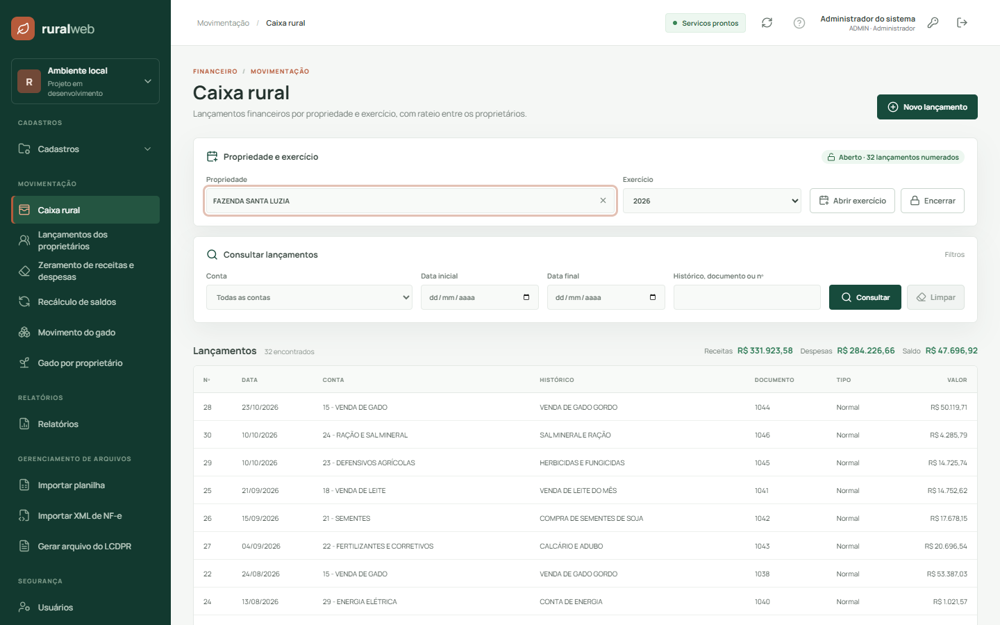
Consultar lançamentos
Filtre por conta, período (data inicial e final) e pelo texto do histórico, documento ou número. Use Limpar para voltar a ver tudo.
Incluir um lançamento
Clique em Novo lançamento. O cabeçalho verde mostra em qual propriedade e exercício você está lançando.

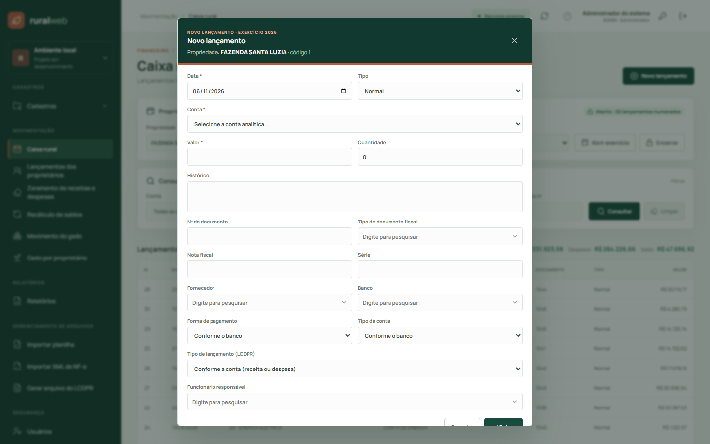
| Campo | Como preencher |
|---|---|
| Data | Data do lançamento, dentro do exercício. |
| Tipo | Normal para o dia a dia. Zeramento é gerado pela tela de zeramento. |
| Conta | Conta analítica do plano de contas. |
| Valor | Sempre positivo. Se é receita ou despesa, quem define é a conta. |
| Histórico | Descrição do lançamento (sai no livro caixa). |
| Documento, nota e série | Número do documento, da nota fiscal e a série. |
| Fornecedor e banco | Quem recebeu ou pagou e por qual conta bancária. São usados no LCDPR. |
| Forma de pagamento, tipo da conta e tipo de lançamento | Deixe Conforme o banco / Conforme a conta, a não ser que o lançamento seja diferente do padrão (por exemplo, receita de produto entregue referente a adiantamento). |
Ao salvar, o sistema numera o lançamento e mostra, no fim da janela, o rateio entre proprietários: quanto coube a cada um.
Alterar ou excluir
Clique no lançamento na lista. A janela mostra os dados e o rateio. Altere e salve, ou use Excluir.

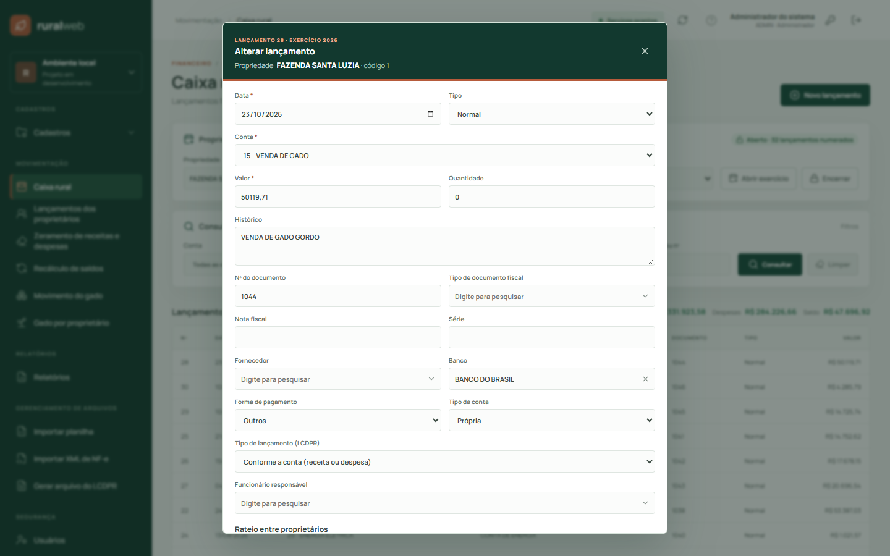
Encerrar o exercício
Terminado o ano, clique em Encerrar. Exercício encerrado não aceita lançamentos novos nem alterações. Se precisar corrigir, um usuário com permissão pode reabrir o exercício: no lugar de Encerrar aparece o botão Reabrir.
6.Lançamentos dos proprietários
Movimentação › Lançamentos dos proprietários. Mostra a parcela de um proprietário em cada lançamento, de todas as propriedades em que ele participa, com os totais de receitas, despesas e saldo.
Escolha o proprietário. Se quiser, filtre por propriedade, exercício, período, documento, série ou valor da parcela. O botão Limpar tira os filtros e mantém o proprietário escolhido.

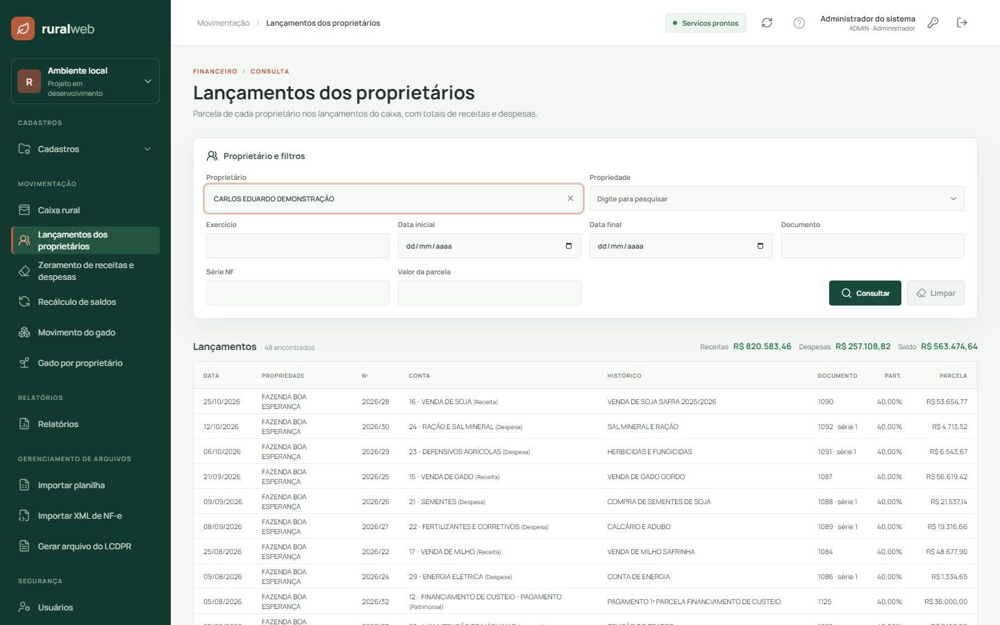
7.Zeramento de receitas e despesas
Movimentação › Zeramento de receitas e despesas. No fim do exercício, lança o inverso do saldo de cada conta de receita e de despesa, para que o saldo de cada proprietário nessas contas fique zerado.
- Escolha a propriedade, o exercício e a data final.
- Confira na lista as contas com saldo e o valor que será lançado.
- Clique em Gerar zeramento.

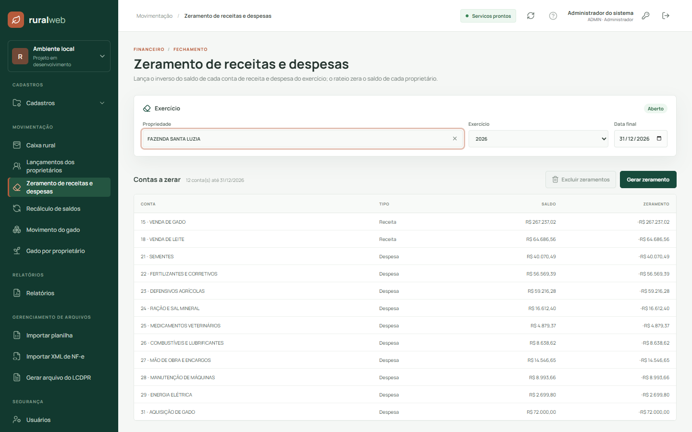
8.Recálculo de saldos
Movimentação › Recálculo de saldos. Refaz a divisão (rateio) dos lançamentos dos exercícios abertos a partir de uma data. Use quando a participação dos proprietários mudar ou entrar ou sair um sócio.
- Manter os atuais: usa os percentuais que estão hoje nos vínculos dos clientes.
- Partes iguais entre os sócios ativos: divide igualmente entre os sócios ativos.
A tela mostra os sócios, o percentual atual, como fica depois do recálculo e quantos lançamentos serão refeitos. Confira e clique em Recalcular.

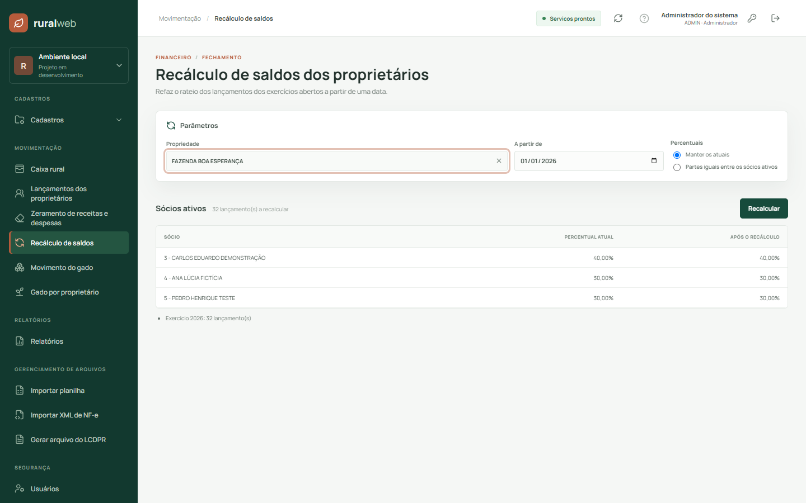
9.Movimento do gado
▶ Ver o vídeo desta parteMovimentação › Movimento do gado. Registra entradas, nascimentos, saídas, abates e perdas do rebanho de cada propriedade, por tipo de animal. Filtre por propriedade, animal, período, situação (entrada ou saída) ou documento.

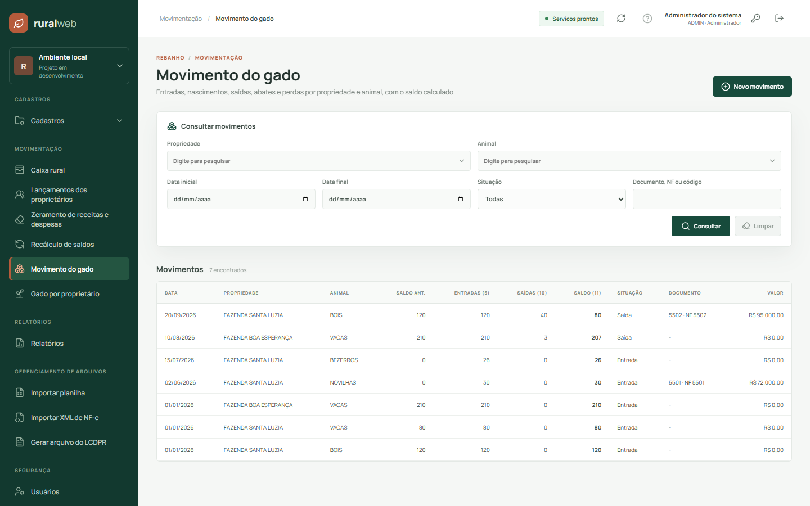
No movimento, o quadro segue o modelo da ficha do rebanho: o saldo anterior vem do último movimento, e o sistema calcula a soma das entradas, das saídas e o saldo. Informe também o tipo de movimento, o valor, a nota e o emitente e, nas saídas, o código DIPAM. Em transferências, escolha a propriedade de destino.

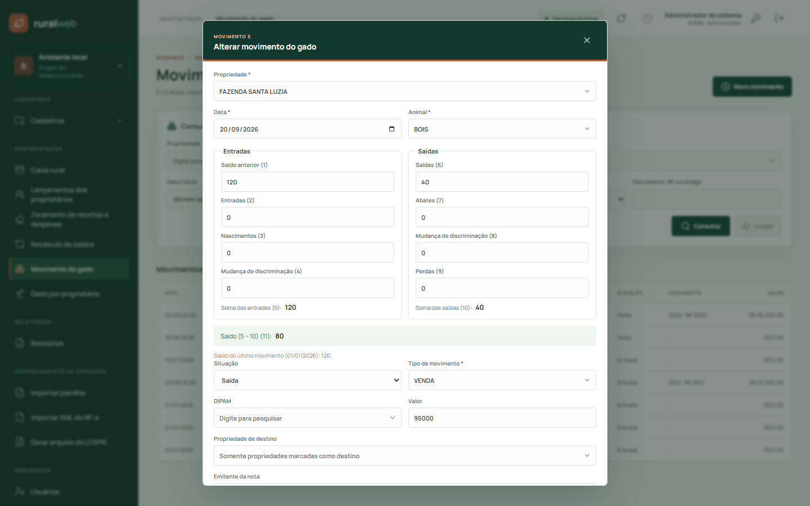
10.Gado por proprietário
Movimentação › Gado por proprietário. Movimento do rebanho de cada proprietário por espécie e período. Filtre por proprietário, espécie e exercício e use Novo movimento para incluir um período.

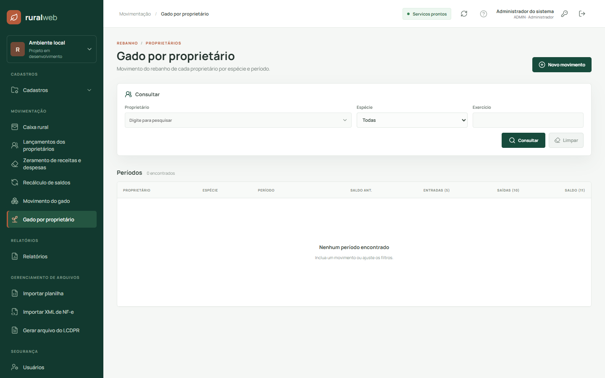
11.Relatórios
▶ Ver o vídeo desta parteRelatórios. Todos os relatórios ficam numa tela só, separados por grupo (Caixa, Cadastros, Rebanho e Análise).
- Clique no relatório na lista à esquerda.
- Preencha os filtros. Em muitos relatórios a Abrangência define se é de uma propriedade, de um proprietário ou de todas as propriedades.
- Clique em Gerar relatório. Ele aparece logo abaixo.
- Use Imprimir / PDF para imprimir ou salvar em PDF (no navegador, escolha a impressora Salvar como PDF) e Exportar Excel para abrir no Excel.

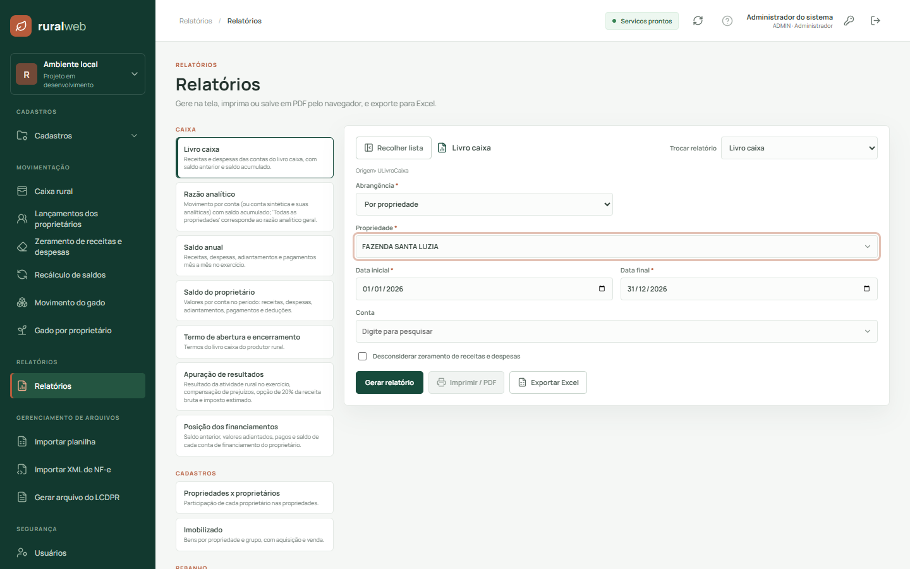

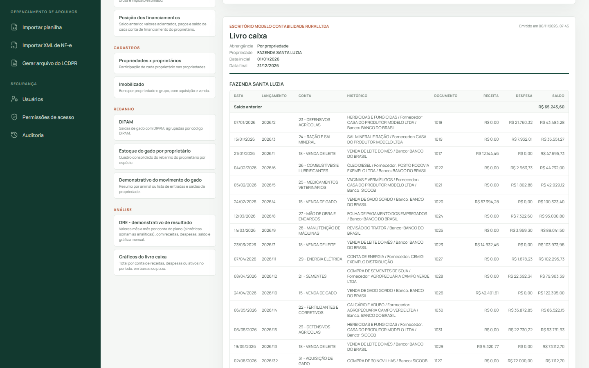
O que cada relatório mostra
| Relatório | O que mostra |
|---|---|
| Livro caixa | Receitas e despesas das contas do livro caixa, com saldo anterior e saldo acumulado. |
| Razão analítico | Movimento por conta (ou por conta sintética e suas analíticas) com saldo acumulado. “Todas as propriedades” corresponde ao razão analítico geral. |
| Saldo anual | Receitas, despesas, adiantamentos e pagamentos mês a mês no exercício. |
| Saldo do proprietário | Valores por conta no período: receitas, despesas, adiantamentos, pagamentos e deduções. |
| Termo de abertura e encerramento | Termos do livro caixa do produtor rural, com o número do livro e a quantidade de páginas. |
| Apuração de resultados | Resultado da atividade rural no exercício, compensação de prejuízos, opção pelos 20% da receita bruta e imposto estimado (usa a Tabela IRRF). |
| Posição dos financiamentos | Saldo anterior, valores adiantados, pagos e saldo de cada conta de financiamento do proprietário. |
| Propriedades x proprietários | Participação de cada proprietário nas propriedades. |
| Imobilizado | Bens por propriedade e grupo, com aquisição e venda. |
| DIPAM | Saídas de gado com DIPAM, agrupadas por código. |
| Estoque do gado por proprietário | Quadro consolidado do rebanho do proprietário por espécie. |
| Demonstrativo do movimento do gado | Resumo por animal ou lista das entradas e saídas da propriedade. |
| DRE | Demonstrativo de resultado: valores mês a mês por conta do plano (as sintéticas somam as analíticas), com receitas, despesas, saldo e gráfico mensal. |
| Gráficos do livro caixa | Total por conta de receitas, despesas ou ativos no período, em barras ou pizza. |

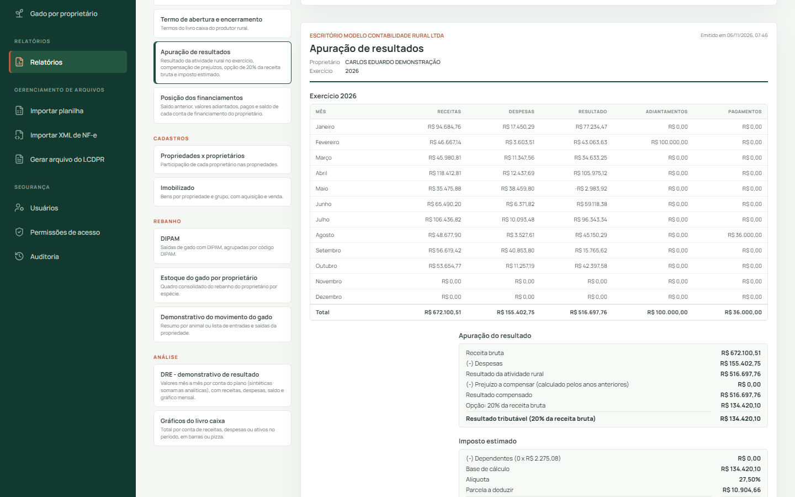

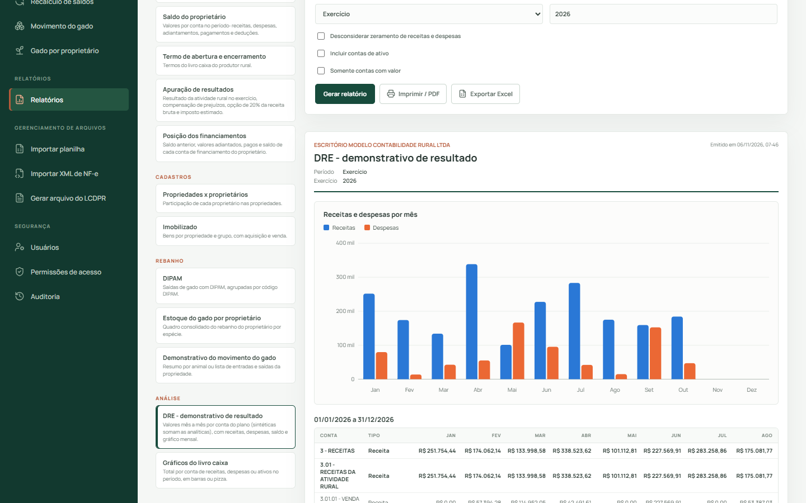

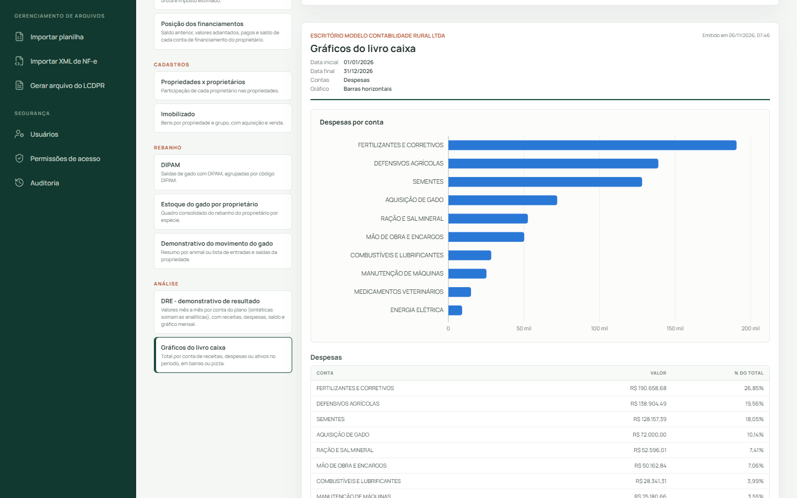
12.Importar planilha
Gerenciamento de arquivos › Importar planilha. Lança de uma vez os movimentos de uma planilha (extrato, controle do produtor etc.).
- Escolha a propriedade, o layout de importação (cadastrado em Tipos de importação) e o arquivo (.xlsx, .xls ou .csv).
- Clique em Analisar planilha. O sistema mostra as linhas para conferência.
- Escolha a conta das linhas que não foram reconhecidas. Você pode marcar várias linhas e aplicar o mesmo banco ou tipo de documento fiscal de uma vez, e pedir para lembrar as contas escolhidas nas próximas importações.
- Clique em Gerar lançamentos. Nada é gravado antes deste passo.

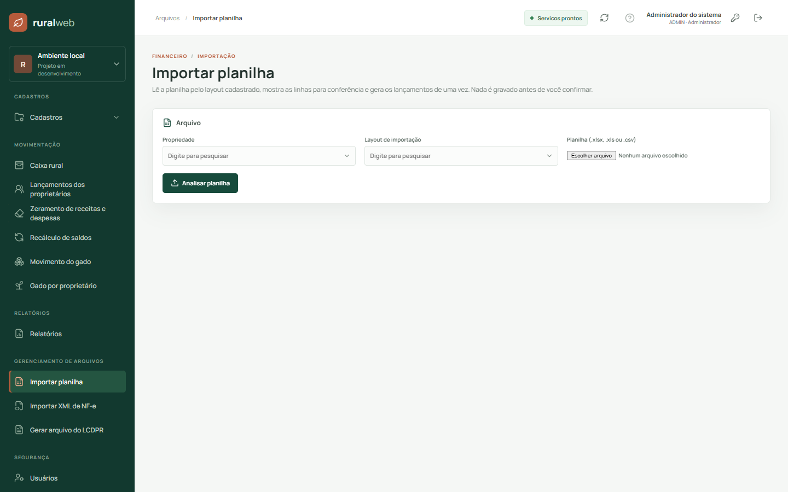
13.Importar XML de NF-e
Gerenciamento de arquivos › Importar XML de NF-e. Gera os lançamentos a partir dos arquivos XML das notas fiscais eletrônicas.
- Escolha um ou vários XML. A propriedade é identificada pelo destinatário da nota.
- Escolha se gera um lançamento por duplicata (na data de vencimento) ou um na emissão.
- Informe a conta de cada lançamento e clique em Gerar lançamentos.
- Notas que já foram lançadas são avisadas, para não lançar em dobro.

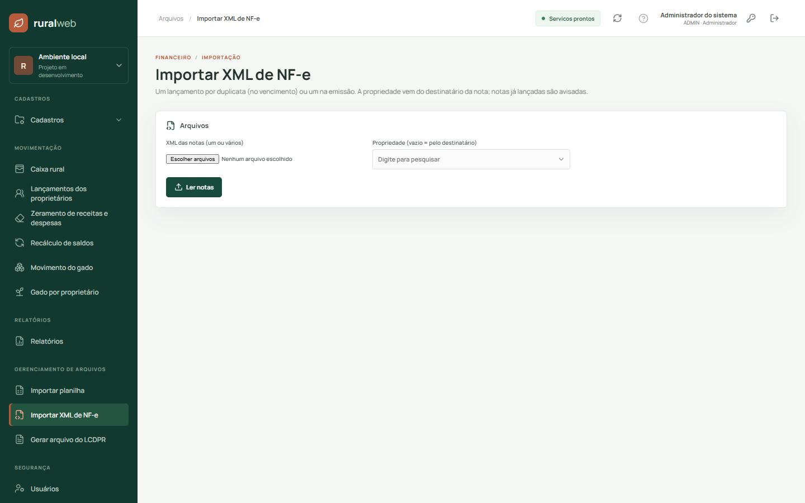
14.Gerar arquivo do LCDPR
Gerenciamento de arquivos › Gerar arquivo do LCDPR. Gera o arquivo do Livro Caixa Digital do Produtor Rural para o programa da Receita Federal, com os lançamentos na parcela do proprietário.
- Escolha o proprietário e o período (normalmente o ano inteiro).
- Informe o início do período, a situação especial (se houver) e a forma de apuração (livro caixa ou lucro presumido).
- Clique em Gerar prévia. Confira os totais, as contas bancárias e a lista Corrija antes de entregar, se aparecer.
- Clique em Baixar arquivo e importe-o no programa do LCDPR.

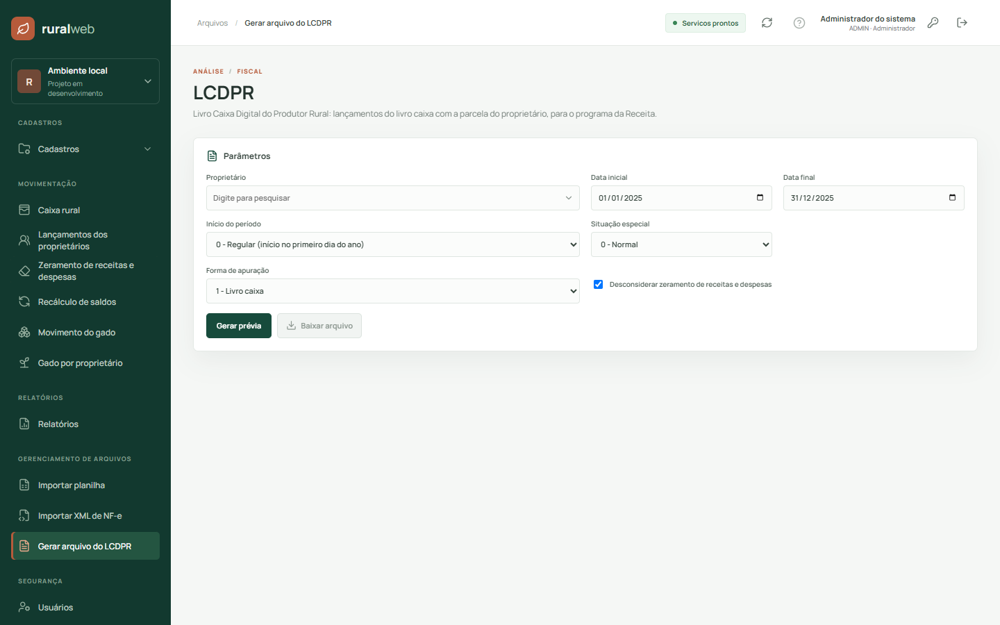
15.Usuários
Segurança › Usuários (somente administradores). Cadastra quem acessa o sistema: o funcionário, o login, o nível (Administrador ou Usuário) e se está ativo.
- Para liberar um usuário novo, deixe a senha em branco: ele cria a própria senha no primeiro acesso.
- Se alguém esquecer a senha ou ficar bloqueado, abra o usuário e clique em Inicializar senha: a senha fica em branco, o bloqueio é retirado e a pessoa cria uma nova ao entrar.
- Para tirar o acesso de quem saiu, marque Ativo = Não. O histórico na auditoria é mantido.

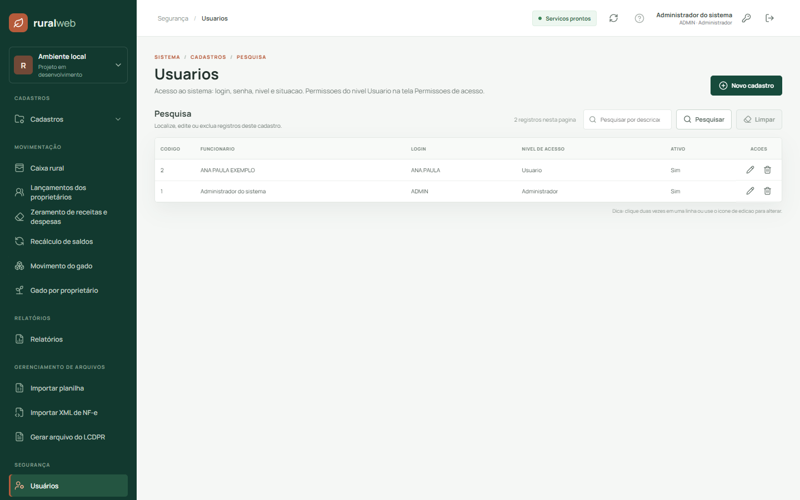
16.Permissões de acesso
Segurança › Permissões de acesso (somente administradores). Administradores acessam tudo. Para o nível Usuário, escolha o usuário e marque, em cada tela:
- Acesso: a tela aparece no menu e o usuário pode pesquisar e consultar.
- Incluir, Alterar e Excluir: o que ele pode fazer além de consultar. O traço (–) indica uma ação que aquela tela não tem.
Clique em Salvar permissões. O usuário vê o menu atualizado quando entrar de novo ou recarregar a página.

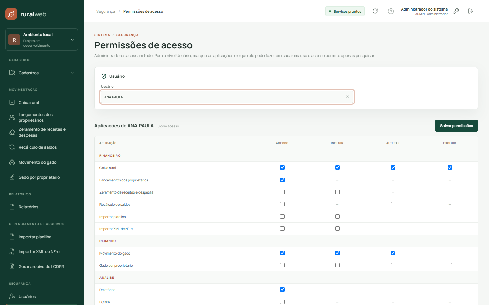
17.Auditoria
Segurança › Auditoria. Mostra quem fez o quê, quando e de onde. Tem três abas:
- Alterações de dados: cada inclusão, alteração e exclusão em cadastros e movimentos, com o usuário, a data e hora, a origem, o registro e o que mudou (o valor antigo riscado e o novo ao lado). Em Ver dados, o registro completo.
- Entradas no sistema: os acessos e as tentativas negadas (senha errada, usuário bloqueado ou inativo).
- Sistema anterior: o histórico de alterações gravado pelo sistema Rural antigo.
Filtre por período, cadastro ou movimento, operação, login e código do registro.

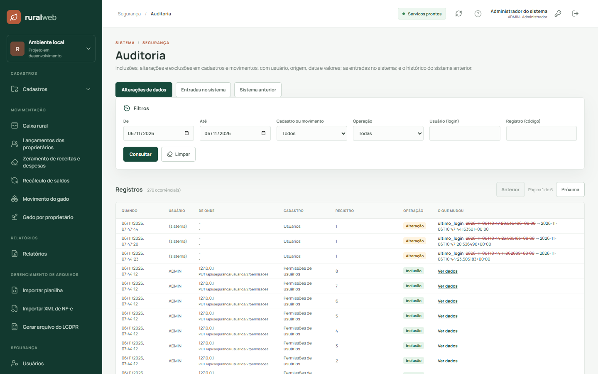
18.Rotina sugerida
Ao receber um cliente novo
- Cadastre a propriedade em Propriedades rurais.
- Cadastre o cliente e, na aba Vínculos rurais, ligue-o à propriedade com o percentual (a soma dos proprietários deve dar 100%).
- No Caixa rural, abra o exercício da propriedade.
No dia a dia
- Lance as receitas e despesas no Caixa rural ou importe planilhas e XML de notas.
- Registre o movimento do gado.
- Acompanhe pelo Livro caixa e por Lançamentos dos proprietários.
No fechamento do ano
- Confira o Livro caixa e a Apuração de resultados de cada proprietário.
- Gere o arquivo do LCDPR e emita os Termos de abertura e encerramento.
- Faça o Zeramento de receitas e despesas e encerre o exercício no Caixa rural.
19.Dúvidas frequentes
Não consigo entrar.
Confira o Caps Lock. Depois de 4 senhas erradas o login fica bloqueado por 15 minutos. Se esqueceu a senha, peça ao administrador para inicializá-la.
Uma opção do menu não aparece ou um botão está apagado.
O seu usuário não tem permissão para ela. Peça ao administrador para liberar em Permissões de acesso.
Não consigo lançar ou alterar um lançamento.
O exercício pode estar encerrado (aparece “Encerrado” ao lado do exercício) ou o exercício do ano ainda não foi aberto.
O valor de um proprietário está errado.
Confira o percentual dele no cliente, aba Vínculos rurais. Se a participação mudou, rode o Recálculo de saldos a partir da data da mudança.
Não consigo excluir um cadastro.
Ele já está sendo usado. Em vez de excluir, inative-o (campo Ativo).
Como salvo um relatório em PDF?
Gere o relatório, clique em Imprimir / PDF e, na janela de impressão, escolha Salvar como PDF. Só o relatório é impresso, sem o menu e os filtros.
Manual do WebRural. As telas mostram um banco de demonstração com dados fictícios (pessoas, propriedades, documentos e valores inventados). Em caso de dúvida, fale com o administrador do sistema.